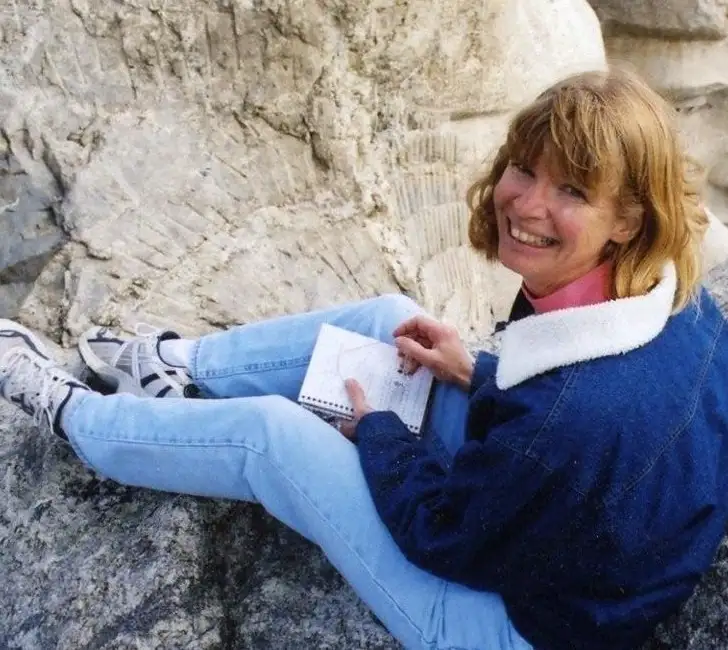

{kind=link}

Children’s author Jean L.S. Patrick doing researchfor one of her books (Photo credit: Pat Hansen)
Children’s author Jean L.S. Patrick and I first crossed paths many years ago at a writer’s conference at the University of North Dakota. I have come to cherish Jean and all of the wisdom and guidance she’s provided through the years, not to mention our abiding friendship. I was fortunate to have been her roommate and travel mate recently: roommate at the spring SCBWI conference in
Jean, it’s hard for me to imagine having gone on this journey into children’s books without your valuable insight and nurturing ways. So first, I want to extend a thank you to you for all you’ve done for me. And now, for our readers, when did you first start believing that the world of children’s book writing was one you were designed to enter?
I’m quite sure that second grade was the time I realized how much I loved books and how much I wanted to be a part of that world. The desire to write was more of an “ache” than a “dream.” In other words, it was a part of me, rather than a distant dream that I was trying to reach. No matter what other career ideas entered my mind (I changed majors in college at least five times), the call to write was always there.
What is it about children’s writing that attracts you? Why not write for your peer group, for adults?
I think I’m stuck at a mental age of about 12 (which is really weird, especially as I look at my kids, ages 18, 19, & 22, and wonder where they came from!). Anyway…because I tend to see the world as a pre-adolescent, it’s more natural to write from that viewpoint.
Describe one of the most amazing experiences you’ve had as a children’s author:
Most of the published work that I’ve done has been nonfiction. The fun part is the research – Really! When researching The Girl Who Struck Out Babe Ruth, I was ecstatic when I received copies of old newspapers from 1931 from the National Baseball Hall of Fame and when I was able to make contact with people who had known Jackie Mitchell while she was still alive. Just as exciting was going to Engel Stadium in
Every book that I’ve written has had exciting research discoveries and opportunities. (Don’t get me started on
When I do school visits, I convey the enthusiasm for the research. (I refer to it as detective work.) By the end of my presentations, kids are saying things like “You’re so lucky because you get to do those things.” At this point, I turn things around and help them look at the passion and interests that they have…and encourage them to research, explore, and write about these interests. By the end of the day, I usually have several students planning to be nonfiction writers!
What is the hardest part about writing for children?
I tend to have plenty of ideas, but I continually struggle with getting them down on paper. In other words, what I see on paper or on the computer screen never matches the tone, rhythm, and overall design and feeling that exist in my mind. Striving for the ideal is what keeps me going. But at the same time, I have to realize that I can’t let myself be defeated when I don’t reach perfection.
As you look into the future, what are you hoping for your writing life?
I hope to continue to write for as long as I live. As we speak, I’m in transition, having decided to try my hand at fiction. Currently, I’m in the middle of a second draft of a novel. As we speak, my immediate goal is to finish the second revision before the end of summer. (Easier said than done!) As much as I enjoy writing fiction, I’m finding that I’m still drawn to nonfiction and will likely return to that genre.
Our mutual friend Jane Kurtz once said that in order to persist in the world of book writing and publishing, you have to have an obsession for the work. Has this been true in your life? What are some of the qualities you must have in order to be successful?
Obsession is key, and actually, it kind of helps if you have OCD tendencies!
What do you wish was different about book publishing?
As we speak, the publishing industry is changing. As a result, there is the tendency for authors to obsess about what they need to do to stay current. Although it is extremely important to know the industry, I find that this information can easily take over my brain and introduce an enormous amount of self-doubt. Intentionally, I have to remind myself that my first responsibility is to write the stories and books that God has laid on my heart.
If you could spend a few minutes with one young writer looking for advice, what would you say to him/her?
Write, write, write. Read, read, read. Pray, pray, pray.
Tell us a little about each of your books, and what makes each special? Please also tell us where we can go to order them.
The Girl Who Struck Out Babe Ruth was my first book (Lerner/Carolrhoda). It’s the true story of Jackie Mitchell, the teenager who struck out Babe Ruth (and Lou Gehrig!) on
If I Had a Snowplow (Boyds Mills Press) is about love and heavy machinery. This picture book is my only piece of fiction. However, it captures the true spirit of a young child who tries to help his mother in every way he can. It starts out fairly logical: In January, he’s going to use his snowplow to clear the road, but by July, he’s using a fire truck to water the garden…and in December, he’s using a dump truck to deliver Christmas presents.
Cows, Cats, and Kids: A Veterinarian’s Family at Work (Boyds Mills Press) is a nonfiction book about the work of a mixed-animal veterinarian, told from the viewpoint of his three kids. The family in this book happens to be mine. (Writing about family was much harder than I ever expected!)
I also have two books about
I’ve also done some work-for-hire books about the Civil War, the solar system, and the human body. Also, I wrote an afterword for a re-printing of The Jumping Off Place, a 1930 Newbery Honor Book that takes place in
Readers can order my books online or through independent bookstores. For a preview, visit my website: http://www.jeanpatrick.com/
It’s closing in on the time of year I went to the Highlights conference for children’s writers in Chautauqua. You were the one who lured me there, and I will be forever grateful, since that experience resulted in my first book contract. What is it, to you, about conferences that make them so worthwhile, especially for those who have never experienced one?
Chautauqua is fantastic. At this conference (which is sponsored by the Highlights Foundation), you are surrounded by editors, authors, and illustrators of all levels for an entire week. You are literally saturated with information and encouragement. Best, the faculty doesn’t hide out from the attendees. You get to eat three meals a day with these people – even seeing what they’re like before they have their coffee!
But Chautauqua is not the only writing conference available. If you visit www.scbwi.org, you’ll find out about writing conferences in your area.
I believe that conferences are essential for several reasons. On the purely pragmatic side, you’ll get current information about the industry and will have the opportunity to meet editors and published authors. Just as important is the support you receive from other attendees. I find it incredibly motivating to be surrounded by “kindred spirits.” These are the people who understand you at your core and will be able to encourage you in the weeks, months, and years to come.
They say every writer has one message to share with the world, that this message can be summed up in one sentence. What is your message, Jean, the message you alone can share (in your unique way) with others?
This is an interesting question. The topics of my books are incredibly diverse. However, I tend to write about people who are fueled by optimism to accomplish huge goals. I hope my readers are inspired to tackle the dreams, goals, and challenges in their own lives, no matter how large.
Thanks so much for stopping by Peace Garden Writer. We wish you the best in your writing endeavors, and I’m sure we’ll be in touch regarding the next writing adventure.
Q4U: Anyone have any questions for Jean that I missed? Now’s your time to ask!